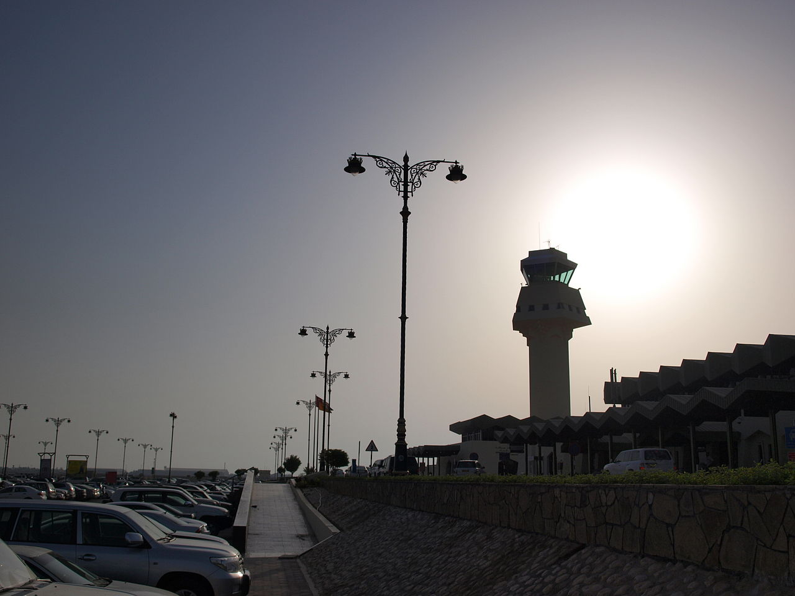
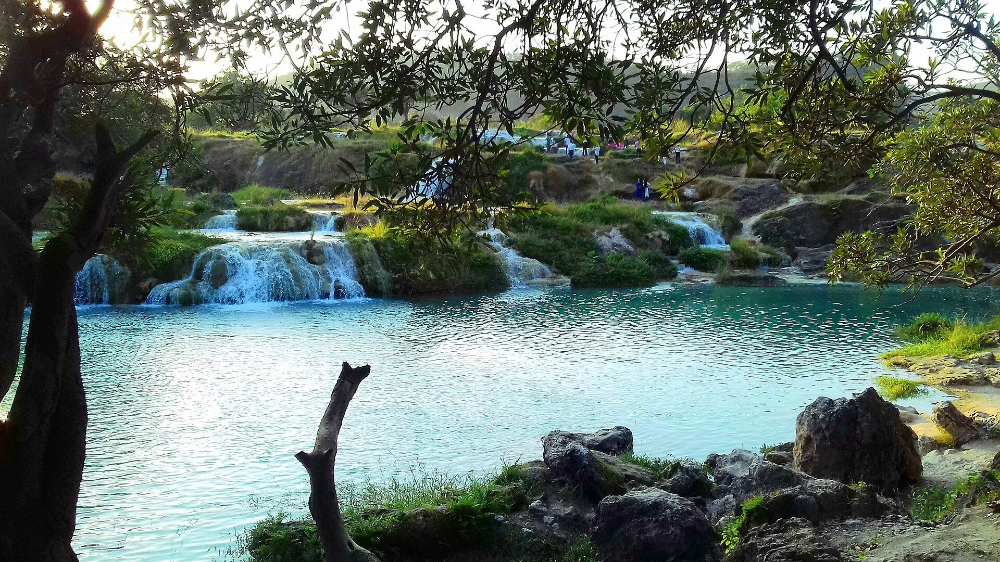
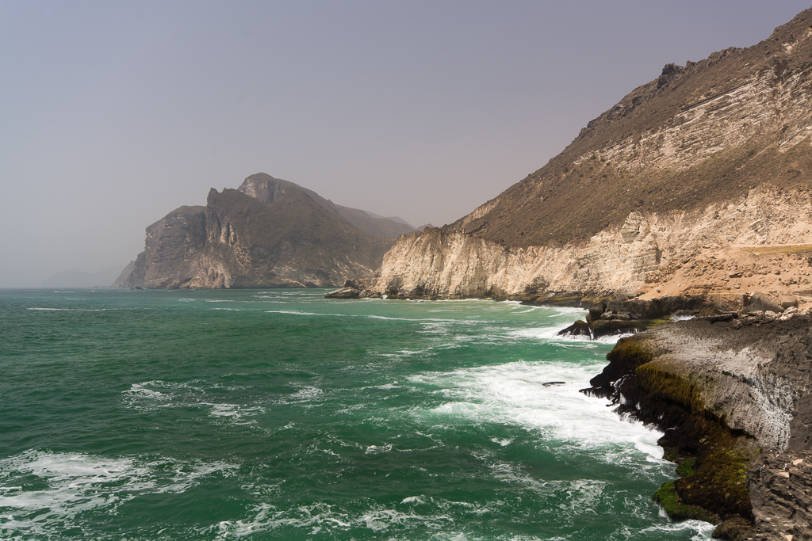
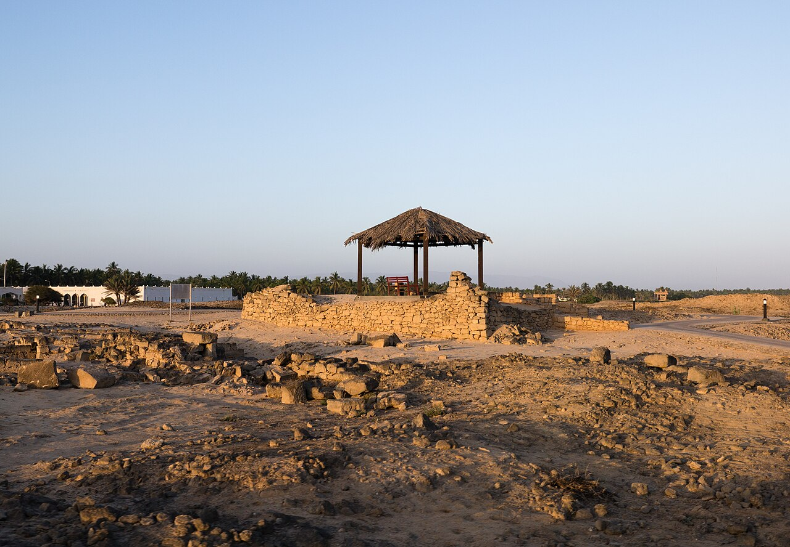
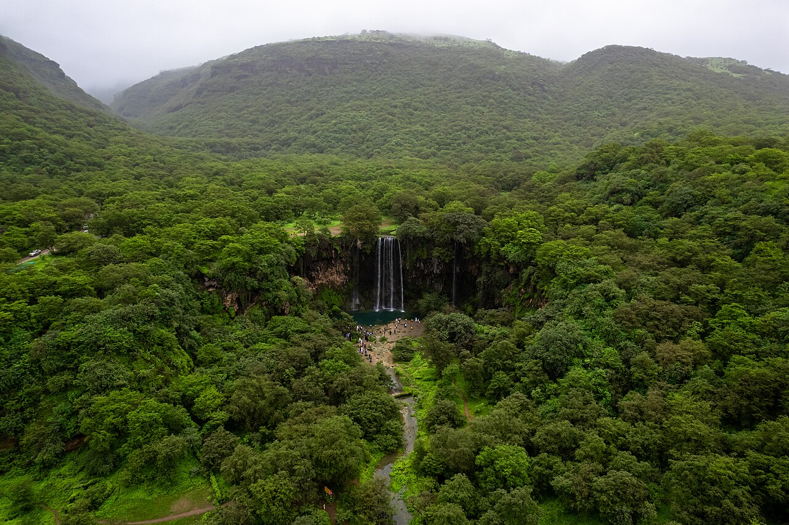
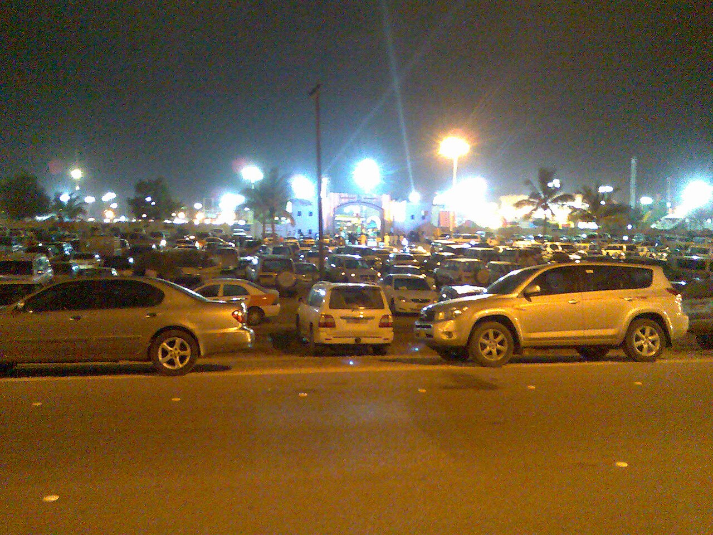
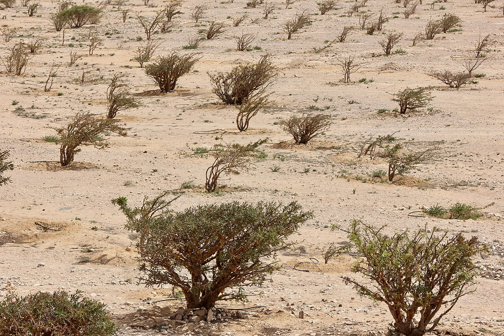
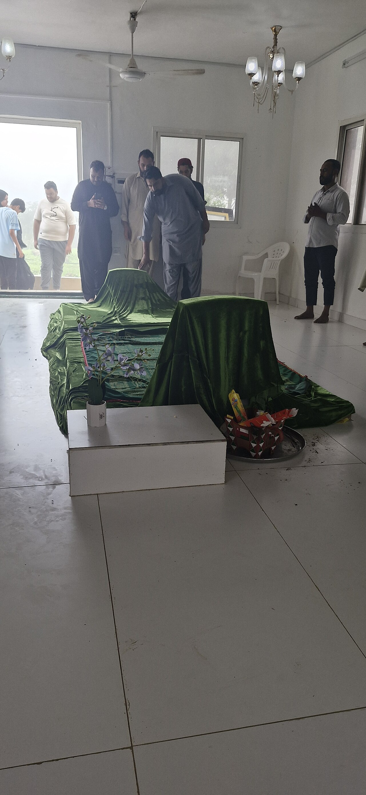
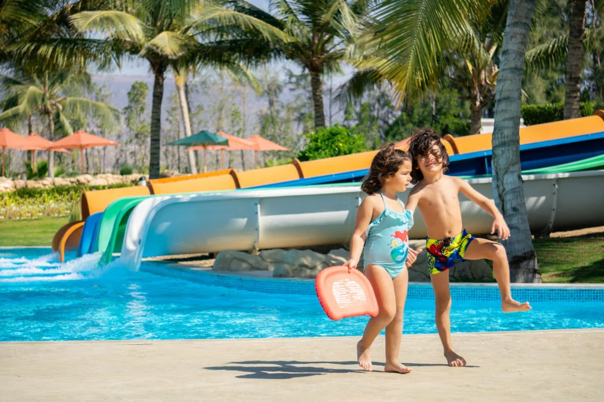
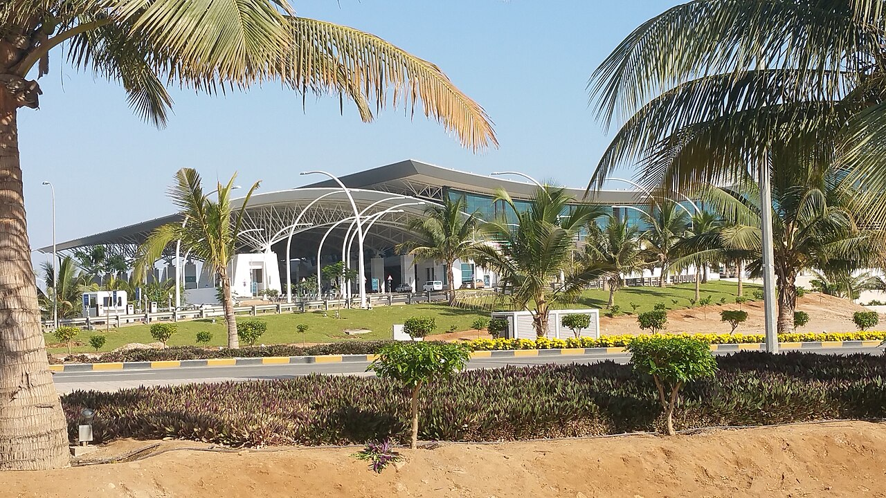

Essential Info
Currency
1 OMR ≈ 9.5 AED. Keep small notes (100 baisa to 1 OMR) for roadside fruit stalls (Mashmoom) and wadi boats. Malls take cards.
Transport
Renting an SUV is highly recommended. Mountain roads (like Jabal Samhan) get heavy fog. Drive slowly and keep headlights on.
Packing
Pack light rain jackets, umbrellas, slip-resistant shoes for muddy wadi trails, and strong mosquito repellent.
Your Daily Adventure
Day 1: 19 July – Late Arrival & Settle In

Land at Salalah Airport (~8 PM), pick up your rental SUV, and check into 📍 Al Salama Suites.
Grab a simple, delicious late dinner at 📍 Al Ghad Restaurant (~AED 28-57) for excellent Pakistani/Indian grills to recharge after your flight.
Day 2: 20 July – Emerald Wadis & Boats

Drive east to 📍 Wadi Darbat. The waterfalls flow actively during peak Khareef. Rent a pedal or small motorboat (~AED 28-48) on the turquoise lake. Spot wild camels grazing by the water!
Bring a picnic mat to 📍 Ayn Razat springs for shaded rest. On the way back, stop by 📍 Taqah Castle for history.
Dinner in private floor-seating rooms (perfect for kids!) at 📍 Bin Ateeq (~AED 38-67). Try the local Omani Shuwa.
Day 3: 21 July – Wild Coast & Blowholes

Walk the decks at 📍 Marneef Cave. Due to rough Khareef seas, water bursts dramatically through the rock vents! (Hold kids' hands tightly).
Enjoy the massive white sands of 📍 Al Mughsail Beach (swimming is unsafe during Khareef due to currents). Optional drive to 📍 Fazayah Beach.
Eat right near the cave at 📍 Al Marneef Restaurant (~AED 48-95). Excellent Arabic and seafood dishes with ocean views.
While Salalah has beautiful marine life, the Khareef season (July/Aug) brings strong currents and reduced visibility, making snorkeling unsafe and difficult, especially for families. A safer alternative is a Dolphin Watching Tour from the marina!
Day 4: 22 July – History, Malls & Fun Zones

Escape the morning humidity at the 📍 Al Baleed Archaeological Site & Museum (~AED 19-28). Highly educational for families.
Head to a mall for AC and fun. 📍 Salalah Gardens Mall has a 'Fun Station', while the newer 📍 Salalah Grand Mall has a large 'Fun Zone'. Both are great for kids.
Lunch at 📍 Makdas Fried Chicken & Pizza (~AED 19-48). Parents can grab premium coffee at 📍 The Coffee Bean & Tea Leaf inside the mall.
Day 5: 23 July – Above the Clouds

Drive up 📍 Jabal Samhan to literally stand above the clouds (chilly!). Descend into the misty forest to view the seasonal 📍 Ayn Athum Waterfall.
Look for locals offering safe, guided horseback or camel rides for kids near the green wadi plains (~AED 48-95).
Treat the family to a premium international dining experience at 📍 Sakalan Buffet (Anantara) (~AED 95-143+).
Day 6: 24 July – Festival Lights

- ⛱️ Relax at the hotel pool or Haffa Beach.
- 🎪 Evening at the Khareef Festival Grounds (Ittin). Rides, music, and fairground fun!
- 🍝 Seaside dinner at Ocean Blue Beach House (~AED 76-114). Lots of space for kids to run.
Day 7: 25 July – Frankincense Trail

- 🌳 Drive to Wadi Dawkah (UNESCO site) to see real, wild frankincense trees growing.
- 📸 Scenic photo stops along the rocky western highway.
- 🍛 Hearty, cheap Pakistani/Arabic meal at Al Qadri Restaurant (~AED 28-57).
Day 8: 26 July – Sacred Views & Souq

Drive up the misty Jabal Ittin to 📍 Prophet Job’s Tomb. Final souq run for textiles. Dinner at 📍 Haffa House or 📍 Al Fanar (~AED 38-76).
Day 9: 27 July – Splash & Play

Spend the day at 📍 Hawana Aqua Park. It's Oman's first water park, offering world-class slides, a wave pool, and fun play areas for all ages - a perfect way to cool off and have a blast.
Day 10: 28 July – Goodbye Salalah

Have a quick breakfast at the hotel before checking out. Head to the airport to return the car for your 10 AM flight. Fly home safely! ✈️
Yummy Family Food Guide
| Restaurant | Cuisine | Cost/Person | Why Kids Love It |
|---|---|---|---|
| Makdas Fried Chicken | Crispy Chicken & Pizza | AED 19-48 | Familiar, comforting fast food for picky eaters! |
| Bin Ateeq | Authentic Omani Local | AED 38-67 | Private carpeted floor rooms—kids can roll around freely! |
| Al Ghad | Pakistani / Indian Grills | AED 28-57 | Super flavorful, hearty, and very budget-friendly. |
| Ocean Blue Beach House | Mediterranean / Seafood | AED 76-114 | Open-air seaside setting with plenty of space to run. |
| The Coffee Bean | Premium Brews | AED 19-38 | AC comfort, sweet pastries, and a calm place to recharge. |
💡 The Best Family Travel Hack!
When the kids get restless in the back of the rental car, pull over at one of the bright fruit stands lining the tropical roads. For less than 1 OMR (~9 AED), the friendly vendors will expertly slice the top off a cold, fresh local coconut (Mashmoom) and pop a straw in it. It’s healthy, refreshing, super fun to drink from, and stops the crying instantly!